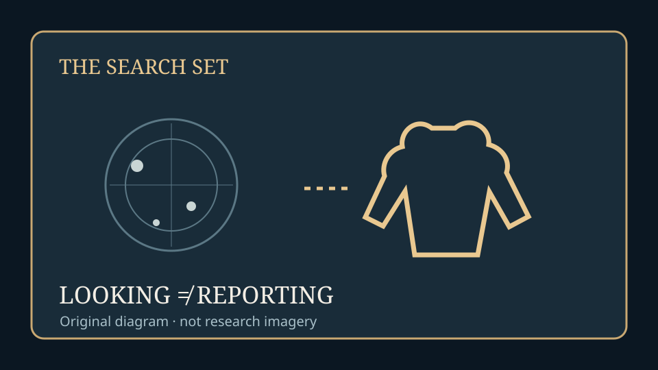

Final Vestige Studios / Mind & Perception / Independent buyer guidance
Can twelve minutes of audio make focus easier? Start with what we can actually verify.
A radiologist can look toward an unexpected shape and never report seeing it. That is a discovery about selective attention—not evidence that a recording rewires a brain. If you want an organized audio practice, here is how to assess Zen12 without buying the science-sounding promises.
Unpublished presell review candidate. Not medical advice, not a product test, no personal trial, no endorsement or proof of performance. No merchant link or paid recommendation is currently active.
Optional original film concept · 42 seconds

Read the full narration transcript (42-second concept)
What you search for can shape what you notice. In a 2013 study, twenty of twenty-four radiologists did not report an unexpected gorilla inserted into a CT image. Some looked toward it. But this was an artificial research image, not a diagnosis or proof that training fails. The useful distinction is between a recorded observation and a claim about its cause. Before you buy any meditation audio, ask the same question. What is in the package—and what has this exact product actually demonstrated? Here is a free twelve-minute audit before spending anything.
What the gorilla experiment actually found
In 2013, Drew, Võ and Wolfe studied radiologists searching for nodules in chest CT scans. They inserted an unexpected gorilla silhouette into the final case. Twenty of twenty-four professionals did not report it; several nonreporters had gaze patterns at the relevant image area. The authors' work supports a bounded finding about expert attention under specific task instructions, not a claim about everyday diagnostic failure. Read the full author manuscript.
That is the difference between a vivid scientific story and a blanket benefit claim. The experiment did not evaluate Zen12—or any branded meditation-audio library.
Do this for free before buying
Try a nonclinical twelve-minute observation audit. Write the one question you want to investigate (2 minutes). List what you directly observe versus what you assume (4 minutes). Locate which claims have direct product-specific tests and which cite general research (3 minutes). Finish by deciding whether the product format itself appeals to you without a promised outcome (3 minutes). No diagnosis, brainwave measurement, or guaranteed cognitive improvement is involved.
For a structured free alternative, the Seven Day Focus Fieldbook is an existing 52-page resource with the established single Dispatch subscription path. Reading this guide never requires joining the list, and we are not adding a new form.
What Zen12 Premium says you receive
The exact public seller page at zen12.com (checked November 14, 2026) lists 48 MP3 recordings across twelve levels, short sessions, a quick-start guide, manual, introductions, and described bonuses and support. These are merchant inventory descriptions; actual post-purchase fulfillment has not been independently tested. The seller advertises a one-year money-back guarantee. We have not authenticated its execution, exclusions or applicable checkout contract.
The page publicly displayed a Premium promotion at $87.99 on November 14. Prior text presentations showed a rounded figure, so neither a screenshot nor this guide guarantees your eventual charge. Final price, taxes, currency, upsells, refund conditions and regional access must be checked on the exact authorized purchase journey before any earning link is released.
Source record: Inspire3 official catalog (inspire3.com) and Zen12 exact public Premium listing (zen12.com). No direct seller purchase URL or affiliated redirect is embedded in this unpublished guide.
The evidence line you should not cross
Zen12's seller says its special audio can deliver an hour's meditation benefits in a twelve-minute session and describes relaxation, focus and health benefits. Those are seller claims, not independently demonstrated results for these recordings. Laboratory attention studies, general meditation research and clinical hypnosis evidence cannot authenticate this product's particular benefits.
We have not measured EEG, stress, working memory, attention, medical outcomes or user satisfaction with Zen12. No reader should infer treatment, cure, increased intelligence or guaranteed focus from the scientific sources discussed here. The FTC's Health Products Compliance Guidance sets a high bar for objective health-product advertising claims.
Five questions that matter more than a countdown
- Which tier? Confirm Premium versus Beginner or Advanced and the files, bonus access and any recurring charges.
- What exactly is the price? Inspect taxes, currency, upsells, optional extras, payment operator and receipt before paying.
- What does the research test? Distinguish independent studies of this product from studies of unrelated meditation techniques.
- How does a refund work? Obtain the current terms in writing, the contact method and the date window; a seller's banner is not a successful-refund audit.
- Is an ordinary free practice enough? Use the twelve-minute audit above or the existing Focus Fieldbook, with no subscription required to read this guide.
Review Zen12 Premium on its authorized seller page
If a short audio library is still of interest after reading the evidence and conditions, the next step would be to review the official, account-authorized product destination and its exact charge and returns—not an implied clinical recommendation.
Prospective affiliate disclosure: If this recommendation is activated and you purchase through an authorized link, Final Vestige Studios may earn a commission at no additional cost to you. The link is currently withheld because publisher acceptance and tracking permission are not verified.
Purchase control intentionally unavailable. The seller's affiliate program does not establish Final Vestige's approval, issued link, allowed promotion channels or a confirmed commission. No click from this draft is recorded as a purchase.
Evidence & disclosure sources
- Drew, Võ and Wolfe (2013), expert inattentional blindness; not a product test.
- Simons and Chabris (1999), inattentional blindness precedent; not a training intervention.
- Puységur's Animal Magnetism Files, historical evidence and testimony, not a proven invisible mechanism.
- FTC Endorsement Guides FAQs, near-link disclosure.
- Final Vestige affiliate policy and editorial standards.